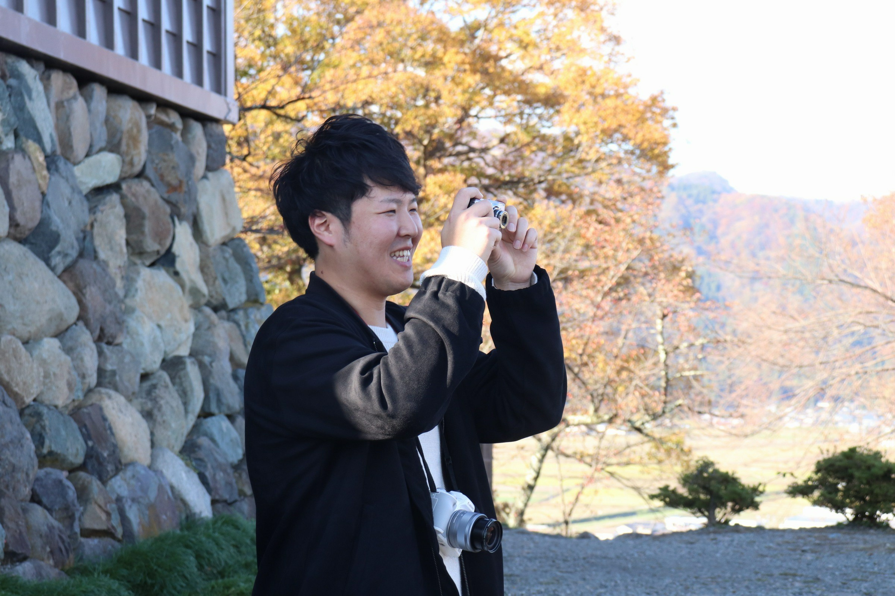

About

Jun Shigemune
出身:大阪 年齢:28歳
前職は、建設会社で土木現場の施工管理をしていました。昔から絵を描いたり、パソコンに触れる機会が多く楽しく仕事がしたい自分でモノ作りがしたいと思いIT業界へ転職。毎日新しい事を学ぶことに楽しみを感じています。
前職は、建設会社で土木現場の施工管理をしていました。昔から絵を描いたり、パソコンに触れる機会が多く楽しく仕事がしたい自分でモノ作りがしたいと思いIT業界へ転職。毎日新しい事を学ぶことに楽しみを感じています。